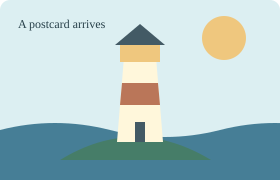

A missing label should not sink the boat. The drawings below keep the parts Yonder can show, even when a neighboring element is beyond it.
The boat stays. Switch its unsupported text label to a drawn checkmark, and back again.
Text label: omitted in Yonder.
In Yonder, this is another boat. The unsupported embedded content, including its red cover, is omitted together.

A separate SVG image keeps its lighthouse despite its missing text label and embedded picture. Its sky follows light and dark pages.
This frame starts empty in Yonder: pattern paint is unsupported. A solid paint makes the rounded rectangle appear.
Pattern paint: drawing refused.
Try 25%, 100% and 400% zoom. With scripts enabled, both buttons toggle. The first boat should stay visible throughout.